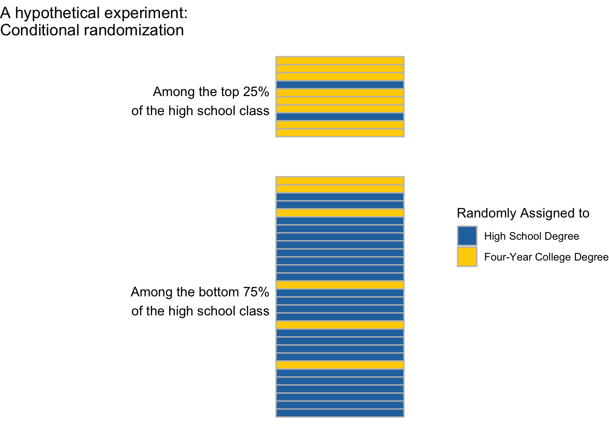
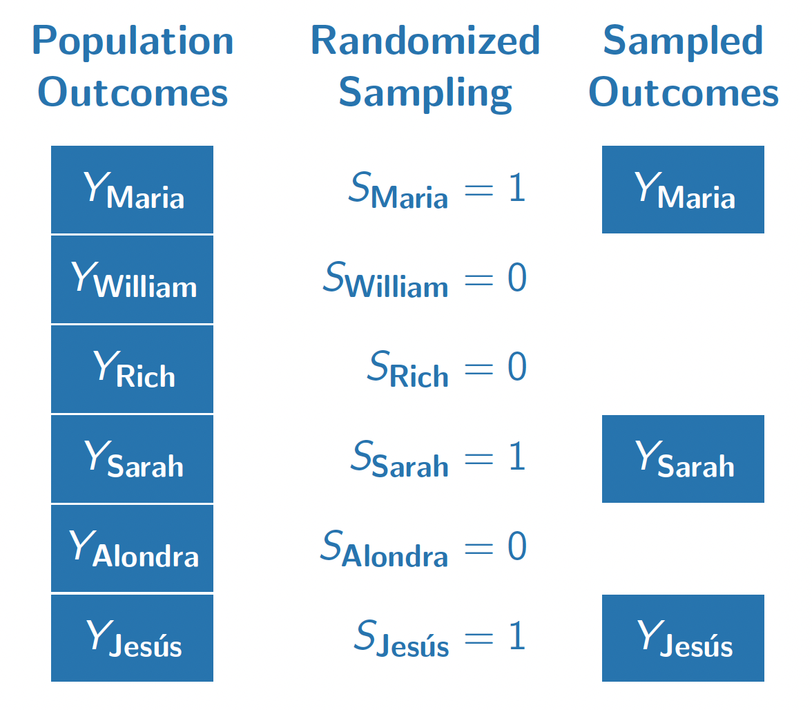
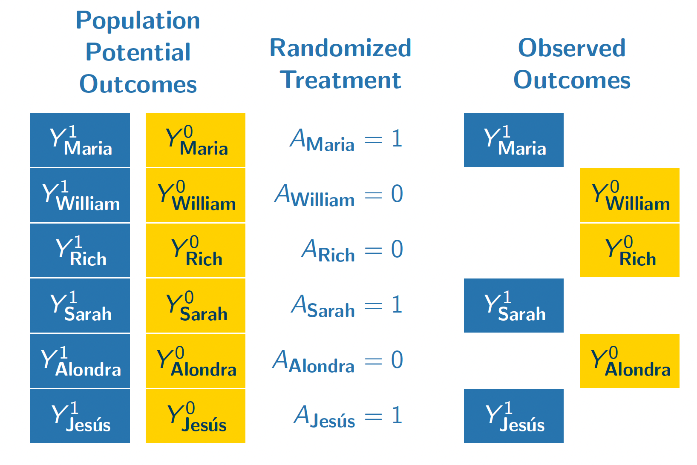

Exchangeability
Topic for 2/11.
Causal effects involve both factual and counterfactual outcomes, yet data that we can observe involve only factual outcomes. To learn about causal effects from data that can be observed requires assumptions about the data that are not observed. This page introduces exchangeability, which is an assumption that can identify causal effects.
Exchangeability in simple random samples
The figure below illustrates a population of 6 people. Each person has an outcome \(Y_i\), which for example might be that person’s employment at age 40. A researcher draws a random sample without replacement with equal sampling probabilities and records the sampled outcomes. The researcher uses the average of the sampled outcomes as an estimator for the population mean.

Why do probability samples like this work? They work because selection into the sample (\(S = 1\)) is completely randomized and thus independent of the outcome \(Y\). In other words, the people who are sampled (\(S = 1\)) and the people who are unsampled (\(S = 0\)) have the same distribution of outcomes (at least in expectation over samples). We might say that the sampled and the unsampled units are exchangeable in the sense that they follow the same distribution in terms of \(Y\). In math, exchangeable sampling can be written as follows.
\[ \underbrace{Y}_\text{Outcome}\quad \underbrace{\mathrel{\unicode{x2AEB}}}_{\substack{\text{Is}\\\text{Independent}\\\text{of}}} \quad \underbrace{S}_{\substack{\text{Sample}\\\text{Inclusion}}} \]
Exchangeability holds in simple random samples because sampling is completely independent of all outcomes by design. In other types of sampling, such as convenience samples that enroll anyone who is interested, exchangeability may hold but is far from guaranteed. Perhaps people who are employed are more likely to answer a survey about employment, so that the employment rate in a convenience sample might far exceed the population mean employment rate. Exchangeability is one condition under which reliable population estimates can be made from samples, and probability samples are good because they make exchangeability hold by design.
Exchangeability in randomized experiments
The figure below illustrates our population if they all enrolled in a hypothetical randomized experiment. In this experiment, we imagine that each unit is either randomized to attain a four-year college degree (\(A = 1)\) or to finish education with a high school diploma (\(A = 0\)).

In this randomization, Maria, Sarah, and Jes'us were randomized to attain a four-year college degree. We observe their outcomes under this treatment condition (\(Y^1\)). Because treatment was randomized with equal probabilities, these three units form a simple random sample from the full population of 6 people. We could use the sample mean of \(Y^1\) among the treated units (Maria, Sarah, Jes'us) as an estimator of the population mean of \(Y^1\) among all 6 units.
William, Rich, and Alondra were randomized to finish their education with a high school diploma. We see their outcomes under this control condition \(Y^0\). Their treatment assignment (\(A = 0\)) is analogous to being sampled from the population of \(Y^0\) values. We can use their sample mean outcome as an estimator of the population mean of \(Y^0\).
Formally, we can write the exchangeability assumption for treatment assignments as requiring that the set of potential outcomes are independent of treatment assignment.
\[ \underbrace{\{Y^1,Y^0\}}_{\substack{\text{Potential}\\\text{Outcomes}}}\quad\underbrace{\mathrel{\unicode{x2AEB}}}_{\substack{\text{Are}\\\text{Independent}\\\text{of}}}\quad \underbrace{A}_\text{Treatment} \] Exchangeability holds in randomized experiments because treatment is completely independent of all potential outcomes by design. In observational studies, where treatment values are observed but are not assigned randomly by the researcher, exchangeability may hold but is far from guaranteed. In the coming classes, we will talk about generalizations of the exchangeability assumption that one can argue might hold in some observational settings.
Causal identification
A population-average causal effect could take many possible values. Using data alone, it is impossible to identify which of these many possible values is the correct one. By pairing data together with causal assumptions, however, one can identify the average causal effect by equating it with a statistical quantity that only involves observable random variables.
Causal identification. A mathematical proof linking a causal estimand (involving potential outcomes) to a statistical quantity involving only factual random variables.
In a randomized experiment, the average causal effect is identified by the assumptions of consistency and exchangeability. A short proof can yield insight about the goals and how these assumptions are used.
\[ \begin{aligned} &\overbrace{\text{E}\left(Y^1\right) - \text{E}\left(Y^0\right)}^{\substack{\text{Average}\\\text{causal effect}\\\text{(among everyone)}}} \\ &= \text{E}\left(Y^1\mid A = 1\right) - \text{E}\left(Y^0\mid A = 0\right) &\text{by exchangeability}\\ &= \underbrace{\text{E}\left(Y\mid A = 1\right)}_{\substack{\text{Mean outcome}\\\text{among the treated}}} - \underbrace{\text{E}\left(Y\mid A = 0\right)}_{\substack{\text{Mean outcome}\\\text{among the untreated}}} &\text{by consistency} \end{aligned} \]
The proof begins with the average causal effect and equates it to a statistical estimand: the mean outcome among the treated minus the mean outcome among the untreated. The first quantity involves potential outcomes (with superscripts), whereas the last quantity involves only factual random variables.
The exchangeability assumption allows us to move from the first line to the second line. Under exchangeability, the mean outcome that would be realized under treatment (\(\text{E}(Y^1)\)) equals the mean outcome under treatment among those who were actually treated (\(\text{E}(Y^0)\)). Likewise for outcomes under no treatment. This line is true because the treated (\(A = 1\)) and the untreated (\(A = 0\)) are both simple random samples from the full population.
The consistency assumption allows us to move from the second line to the third. Among the treated, (\(A = 1\)), the outcome that is realized is \(Y = Y^1\). Among the untreated (\(A = 0\)), the outcome that is realized is \(Y = Y^0\). Under the assumption that factual outcomes are consistent with the potential outcomes under the assigned treatment, the second line equal the third.
Something nice about a causal identification proof is that there is no room for error: it is mathematically true that the premise and the assumptions together yield the result. As long as the assumptions hold, the statistical estimand equals the causal estimand. Causal inference thus boils down to research designs and arguments that can lend credibility to the assumptions that let us draw causal claims from data that are observed.
Conditional exchangeability
This topic is covered Feb 4. Here are slides.
Conditional exchangeability is an assumption that exchangeability holds within population subgroups. This assumption holds by design in a conditionally randomized experiment (discussed on this page), and may hold under certain causal beliefs in observational settings where the treatment is not randomized (next page).
A conditionally randomized experiment
Suppose we were to carry out an experiment on a simple random sample of U.S. high school students. Among those performing in the top 25% of their high school class, we randomize 80% to attain a four-year college degree. Among those performing in the bottom 75% of their high school class, we randomize 20% to attain a four-year college degree. We are interested in effects on employment at age 40 (\(Y\)).
This experiment is conditionally randomized because the probability of treatment (four-year degree) is different among the higher- and lower-performing high school students.
Conditionally randomized experiment. An experiment in which the probability of treatment assignment depends on the values of pre-treatment covariates. \(\text{P}(A = 1\mid\vec{X} = \vec{x})\) depends on the value \(\vec{x}\).
Conditional exchangeability
In a conditionally randomized experiment, exchangeability is not likely to hold. People who are treated (assigned to a four-year degree) are more likely to have come from the top 25% of their high school class. They might be especially hard-working people. The treated and untreated might have had different employment at age 40 even if none of them had been treated.
Even though exchangeability does not hold marginally (across everyone), in a conditionally randomized experiment exchangeability does hold within subgroups. If we focus on those in the top 25% of the class, the 90% who are assigned to finish college are a simple random sample of the entire higher-performing subgroup. If we focus on those in the bottom 75% of the class, the 10% who are assigned to finish college are a simple random sample of the entire lower-performing subgroup.
Formally, conditional exchangeability takes the exchangeability assumption (\(\{Y^0,Y^1\}\unicode{x2AEB}A\)) and adds a conditioning bar \(\mid\vec{X}\), meaning that this assumption holds within subgroups defined by one or more pre-treatment variables \(\vec{X}\).
Conditional exchangeability. The assumption that potential outcomes \(\{Y^0,Y^1\}\) are independent of treatment \(A\) among subpopulations that are identical along a set of pre-treatment covariates \(\vec{X}\). Formally, \(\{Y^0,Y^1\} \unicode{x2AEB} A \mid \vec{X}\).
Conditional exchangeability holds by design in conditionally randomized experiments: the probability of treatment assignment differs across subgroups, but within each subgroup we have a simple randomized experiment where each unit has an equal probability of being treated.
Conditional average treatment effects
In our conditionally randomized experiment, we could identify conditional average treatment effects: the average effects of college on employment at age 40 (1) among those in the top 25% of their high school class, and the and (2) among those in the bottom 75% of their high school class.
Conditional average treatment effect (CATE). The average causal effect within a population subgroup, \(\tau(x) = \text{E}\left(Y^1\mid\vec{X} = \vec{x}\right) - \text{E}\left(Y^0\mid \vec{X} = \vec{x}\right)\).
Once we assume conditional exchangeability and consistency, CATEs are causally identified by working within a subgroup defined by \(\vec{X} = \vec{x}\) and taking the difference in means across subgroups of units assigned to treatment and control.
\[ \begin{aligned} &\text{E}\left(Y^1\mid\vec{X} = \vec{x}\right) - \text{E}\left(Y^0\mid\vec{X} = \vec{x}\right)\\ &= \text{E}\left(Y\mid\vec{X} = \vec{x}, A = 1\right) - \text{E}\left(Y\mid\vec{X} = \vec{x}, A = 0\right) \end{aligned} \]
In our concrete example, this means that we could first focus on the subgroup for whom \(\vec{X} = (\text{Top 25\% of high school class})\). Within this subgroup, we can compare employment at age 40 among those randomized to a 4-year college degree to employment at age 40 among those randomized to finish education after high school. This mean difference identifies the CATE: the average causal effect of college among those in the top 25% of their high school class.
Likewise, our experiment would also identify the CATE among those in the bottom 75% of their high school class.
Effect heterogeneity
There are often good reasons to expect the Conditional Average Treatment Effect (CATE) to differ across subpopulations. In our example, suppose that those from the top 25% of the high school class are very creative and hard-working, and would find ways to be employed at age 40 regardless of whether they finished college. The average causal effect of college on employment in this subgroup might be small. Meanwhile, the average causal effect of college on employment might be quite large among those from the bottom 75% of their high school class. This would be an example of effect heterogeneity,
Effect heterogeneity. Differences in Conditional Average Treatment Effects (CATEs) across subpopulations. \(\tau(\vec{x})\neq\tau(\vec{x}')\).
An advantage of analyzing randomized experiments conditionally (within subgroups) is that one can search for effect heterogeneity.